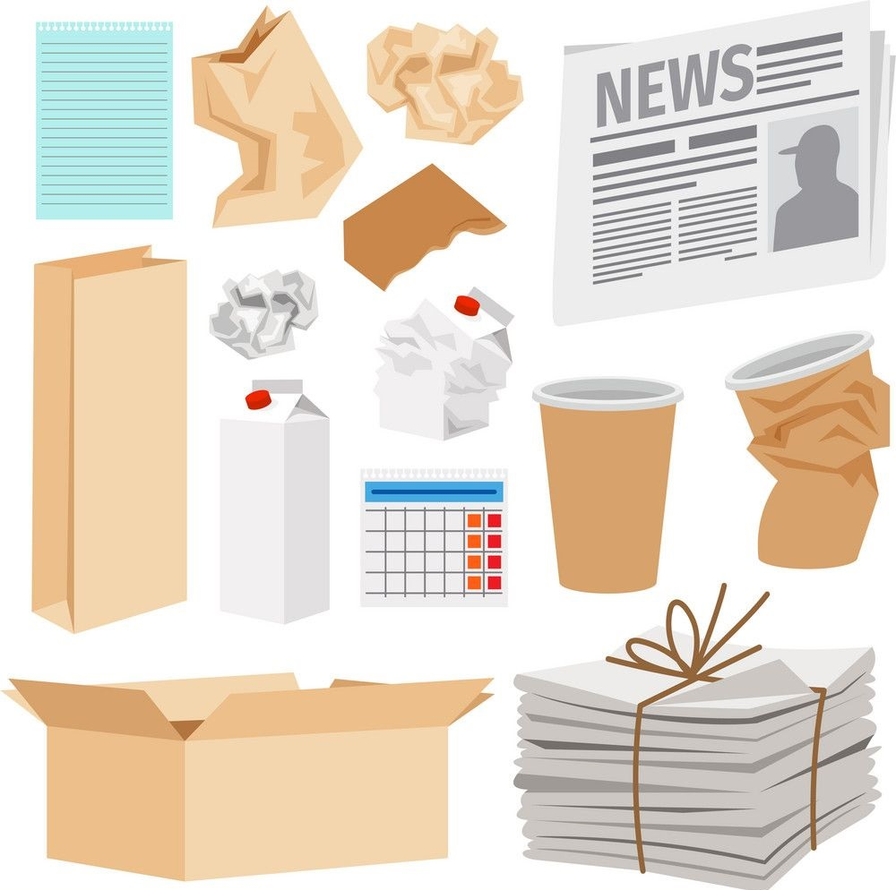
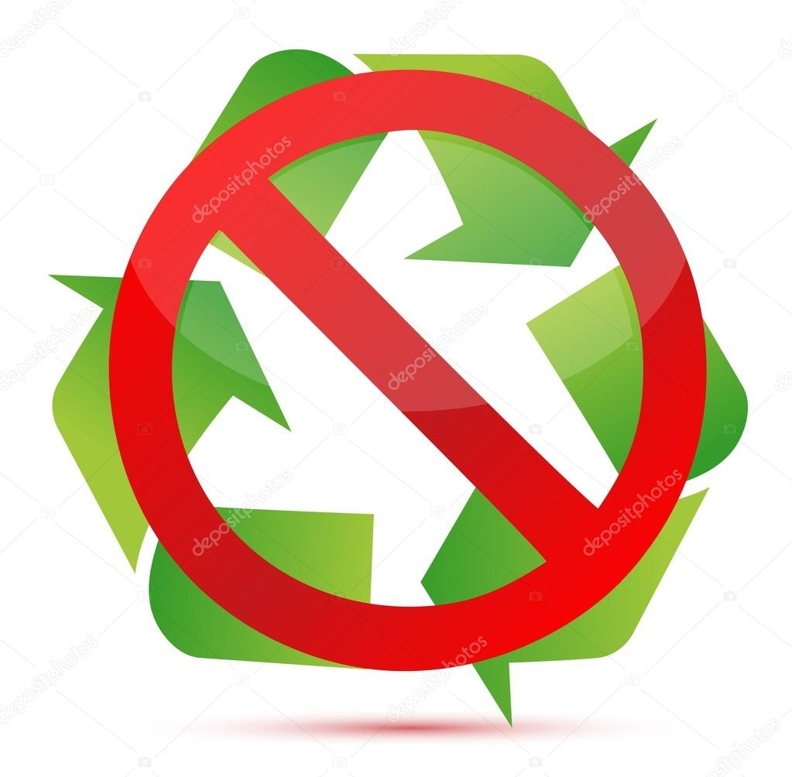
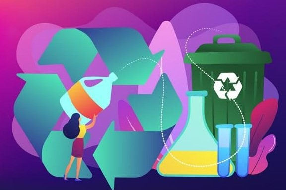
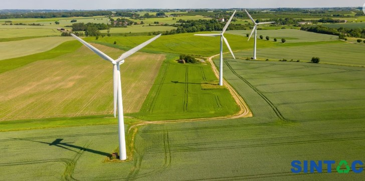

Importancia del Reciclaje
A lo largo de los años hemos podido identificar el gran consumo innecesario de productos que contiene materiales que al ser desechados de forma incorrecta generan contaminacion, estos a su vez si se utilizaran de forma adecuada se podrian aprovechar de formas muy favorables para el medio ambiente y la economia de un pais, por este motivo el dar una prioridad a la correcta seleccion y clasificacion de los desechos diarios puede ser el aporte que cada uno podemos braindar al medio ambiente.
Tipos de reciclaje según los materiales básicos
Es importante aprender a conocer los tipos de materiales que debemos reciclar, deacuerdo a su clasificación encontraras la manera adecuada de identificarlos
Plásticos Y latas

Papel y cartón
Vidrio

Orgánicos
No reciclable
Reciclaje segun procesos
Es importante aprender a conocer los tipos de materiales que debemos reciclar, deacuerdo a su clasificación encontraras la manera adecuada de identificarlos
Mecanico

Quimico
Energetico
Como reciclar en casa
Este video nos ayudara a conocer mejor como debemos reciclar en casa segun el color de las bolsas.